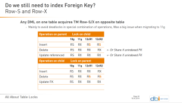

|
|
This was first published on https://blog.dbi-services.com/result-cache-invalidation-caused-by-dml-locks (2018-03-18)
Republishing for new followers. The content is related to the the versions available at the publication date
In a previous post about Result Cache, I was using ‘set autotrace on’ in my session to see when the result cache hit saves the logical reads. I got a comment, by e-mail and with full test case, mentioning that the invalidation I had when doing some DML does not occur when autotrace is set to off. I reproduced the problem, on 18c because I use my cloud services to do my tests, but it works the same way in 12c. I’ll focus here on DML which does not modify any rows from the table the result depends on, because this is the case that depends on the session transaction context. When rows are modified, the result is always invalidated.
For each test here I’ll flush the result cache:
SQL> exec if dbms_result_cache.flush then dbms_output.put_line('Flushed.'); end if;
PL/SQL procedure successfully completed.
SQL> select id,type,status,name,cache_id,invalidations from v$result_cache_objects order by id
no rows selected
And I begin each test with the result cache loaded by a query.
The result or the query is loaded into the cache, with a dependency on the SCOTT.DEPT table:
SQL> select id,type,status,name,cache_id,invalidations from v$result_cache_objects order by id ID TYPE STATUS NAME CACHE_ID INVALIDATIONS -- ---- ------ ---- -------- ------------- 0 Dependency Published SCOTT.DEPT SCOTT.DEPT 0 1 Result Published select /*+ result_cache */ count(*) from DEPT 50vtzqa5u0xcy4bnh6z600nj1u 0
Now, I’m executing some DML on this DEPT table:
SQL> connect scott/tiger@//localhost/PDB1 Connected. SQL> delete from DEPT where DEPTNO>40; 0 rows deleted.This delete does not touch any row, but declares the intention to modify the table with a Row eXclusive lock (TM mode=3):
SQL> select * from v$locked_object natural join (select object_id,object_name from user_objects)
OBJECT_ID XIDUSN XIDSLOT XIDSQN SESSION_ID ORACLE_USERNAME OS_USER_NAME PROCESS LOCKED_MODE CON_ID OBJECT_NAME
--------- ------ ------- ------ ---------- --------------- ------------ ------- ----------- ------ -----------
73376 0 0 0 21 SCOTT oracle 7772 3 5 DEPT
Note that the transaction ID is all zeros. Logically, we are in a transaction, as we have a lock that will be released only at the end of the transaction (commit or rollback). But, as we didn’t modify any block yet, there is no entry in the transaction table:
SQL> select xidusn,xidslot,xidsqn,start_time,used_urec from v$transaction no rows selectedI commit this transaction:
SQL> commit; Commit complete.and check the result cache objects:
SQL> select id,type,status,name,cache_id,invalidations from v$result_cache_objects order by id ID TYPE STATUS NAME CACHE_ID INVALIDATIONS -- ---- ------ ---- -------- ------------- 0 Dependency Published SCOTT.DEPT SCOTT.DEPT 0 1 Result Published select /*+ result_cache */ count(*) from DEPT 50vtzqa5u0xcy4bnh6z600nj1u 0
This look good: nothing was modified so there is no reason to invalidate the result. However, in the previous post I referenced, a similar test invalidated the cache even when no rows were touched. And a reader remarked that this occured only when I previously run a query with ‘autotrace on’. Without autotrace, the behaviour is like what I show here above: no invalidation when no rows is modified.
The difference is that the ‘autotrace on’ runs an ‘explain plan’, filling the plan table, which means that a transaction was already started. Here I run autotrace on a completely different query:
SQL> set autotrace on explain Autotrace Enabled Displays the execution plan only. SQL> select * from dual; DUMMY ----- X Explain Plan ----------------------------------------------------------- PLAN_TABLE_OUTPUT Plan hash value: 272002086 -------------------------------------------------------------------------- | Id | Operation | Name | Rows | Bytes | Cost (%CPU)| Time | -------------------------------------------------------------------------- | 0 | SELECT STATEMENT | | 1 | 2 | 2 (0)| 00:00:01 | | 1 | TABLE ACCESS FULL| DUAL | 1 | 2 | 2 (0)| 00:00:01 | -------------------------------------------------------------------------- SQL> set autotrace off; Autotrace Disabled
Following this, I have no locked objects, but a transaction has been initiated:
SQL> select * from v$locked_object natural join (select object_id,object_name from user_objects)
no rows selected
SQL> select xidusn,xidslot,xidsqn,start_time,used_urec from v$transaction
XIDUSN XIDSLOT XIDSQN START_TIME USED_UREC
------ ------- ------ ---------- ---------
9 18 709 03/18/18 20:30:09 2
Here is the big difference: I have a transaction ID here. Now doing the same as before, a delete touching no rows:
SQL> delete from DEPT where DEPTNO>40; 0 rows deleted.
When I query the lock objects, they are now associated to a non-zero transaction ID:
SQL> select * from v$locked_object natural join (select object_id,object_name from user_objects)
OBJECT_ID XIDUSN XIDSLOT XIDSQN SESSION_ID ORACLE_USERNAME OS_USER_NAME PROCESS LOCKED_MODE CON_ID OBJECT_NAME
--------- ------ ------- ------ ---------- --------------- ------------ ------- ----------- ------ -----------
73376 9 18 709 21 SCOTT oracle 7772 3 5 DEPT
Here is the difference, now the result cache has been invalidated:
SQL> commit; Commit complete. SQL> select id,type,status,name,cache_id,invalidations from v$result_cache_objects order by id ID TYPE STATUS NAME CACHE_ID INVALIDATIONS -- ---- ------ ---- -------- ------------- 0 Dependency Published SCOTT.DEPT SCOTT.DEPT 1 1 Result Invalid select /*+ result_cache */ count(*) from DEPT 50vtzqa5u0xcy4bnh6z600nj1u 0
This gives the idea that the invalidation is not really triggered by actual modifications, but at commit time from the DML locks when associated with a transaction. And some DML on tables may acquire a Row-S or Row-X lock on the tables linked by referential integrity. This has changed a lot though versions – look at the slide on the right.
I start in the same situation, with the result cache loaded, no locked objects, but a transaction that has started:
SQL> select id,type,status,name,cache_id,invalidations from v$result_cache_objects order by id
ID TYPE STATUS NAME CACHE_ID INVALIDATIONS
-- ---- ------ ---- -------- -------------
0 Dependency Published SCOTT.DEPT SCOTT.DEPT 0
1 Result Published select /*+ result_cache */ count(*) from DEPT 50vtzqa5u0xcy4bnh6z600nj1u 0
SQL> select * from v$locked_object natural join (select object_id,object_name from user_objects)
no rows selected
SQL> select xidusn,xidslot,xidsqn,start_time,used_urec from v$transaction
XIDUSN XIDSLOT XIDSQN START_TIME USED_UREC
------ ------- ------ ---------- ---------
8 31 766 03/18/18 20:30:10 2
I delete from the EMP table and if you are familiar with the SCOTT schema, you know that it has a foreign key to DEPT.
SQL> delete from EMP where DEPTNO>=40; 0 rows deleted.
The delete acquires a Row eXclusive lock on EMP even when there are no rows deleted (DML locks are about the intention to modify rows). And from the table above, it acquires a Row Share (mode=2) on the parent table:
SQL> select * from v$locked_object natural join (select object_id,object_name from user_objects)
OBJECT_ID XIDUSN XIDSLOT XIDSQN SESSION_ID ORACLE_USERNAME OS_USER_NAME PROCESS LOCKED_MODE CON_ID OBJECT_NAME
--------- ------ ------- ------ ---------- --------------- ------------ ------- ----------- ------ -----------
73376 8 31 766 21 SCOTT oracle 7772 2 5 DEPT
73378 8 31 766 21 SCOTT oracle 7772 3 5 EMP
I commit and check the result cache:
SQL> commit; Commit complete. SQL> select id,type,status,name,cache_id,invalidations from v$result_cache_objects order by id ID TYPE STATUS NAME CACHE_ID INVALIDATIONS -- ---- ------ ---- -------- ------------- 0 Dependency Published SCOTT.DEPT SCOTT.DEPT 0 1 Result Published select /*+ result_cache */ count(*) from DEPT 50vtzqa5u0xcy4bnh6z600nj1u 0
No invalidation here, which makes sense because Row Share is not an intention to write.
I do the same here, but with an insert on EMP which acquires a Row eXclusive on the parent table.
SQL> insert into EMP(EMPNO,DEPTNO)values(9999,40);
1 row inserted.
SQL> select * from v$locked_object natural join (select object_id,object_name from user_objects)
OBJECT_ID XIDUSN XIDSLOT XIDSQN SESSION_ID ORACLE_USERNAME OS_USER_NAME PROCESS LOCKED_MODE CON_ID OBJECT_NAME
--------- ------ ------- ------ ---------- --------------- ------------ ------- ----------- ------ -----------
73376 10 32 560 21 SCOTT oracle 7772 3 5 DEPT
73378 10 32 560 21 SCOTT oracle 7772 3 5 EMP
SQL> select xidusn,xidslot,xidsqn,start_time,used_urec from v$transaction
XIDUSN XIDSLOT XIDSQN START_TIME USED_UREC
------ ------- ------ ---------- ---------
10 32 560 03/18/18 20:30:10 4
SQL> commit;
Commit complete.
SQL> select id,type,status,name,cache_id,invalidations from v$result_cache_objects order by id
---- ------ ------------------------------------------ ---- ---------------------- ----- -- --
ID TYPE STATUS NAME CACHE_ID INVALIDATIONS
0 Dependency Published SCOTT.DEPT SCOTT.DEPT 1
1 Result Invalid select /*+ result_cache */ count(*) from DEPT 50vtzqa5u0xcy4bnh6z600nj1u 0
Here, DEPT has been invalidated after the insert on EMP. There were no modifications on DEPT, but the result cache is not directly tracking the modifications, but rather the intention of modification. And then, the implementation of the result cache invalidation tracks, at commit, the Row eXclusive locks when they are related to a know transaction. You can have the same result if, from a transaction that has already started, you run a simple:
SQL> lock table DEPT in row exclusive mode; Lock succeeded.
This means that there are many reasons why the result cache may be invalid even when the objects in the ‘Dependency’ are not modified. Be careful, invalidations and cache misses are expensive and do not scale on high load. And because of locks through referential integrity, this can happen even on static tables. Let’s take an example. in an order entry system, you may think that the ‘products’ table is a good candidate for result cache – updated twice a year but read all the times. But now that you know that inserts on child tables, such as the order table, will invalidate this cache, you may think again about it.
{kind=link}